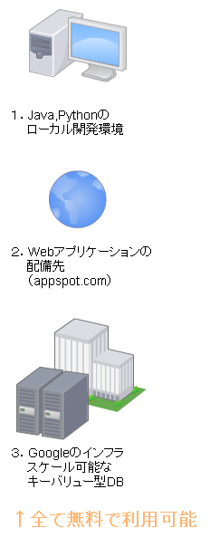
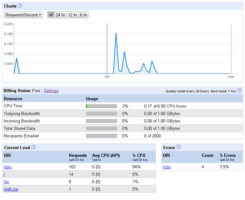
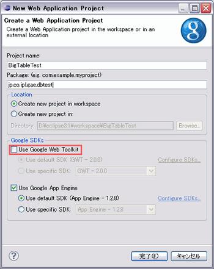

株式会社 アイプランニング
Towa Edogawabashi building 8F
Yamabuki-cho 347
Shinjuku-ku Tokyo
Phone: 03-5225-1147
Google App Engine連載記事です。Googleのクラウドを手軽に使える、Google App Engine/Javaの特徴・限界と、導入方法についてまとめました。
目次
第一回 Google App Engine/Javaの特徴・Eclipseプラグインのインストール
第二回 Google App
Engine/Javaデータストアの特徴
第三回 Google App Engine/Javaで簡易Blogを作ってみる
１．Google App Engineとは？

Google App Engine（以降GAE）は、Google製のクラウド＋開発環境です。
ユーザ登録を行うと、
・開発環境とローカルテスト環境
・Webサーバ、アプリケーションサーバ（Java Servlet,
Pythonスクリプトが動作）
・スケール可能なDB
が提供され、スケールアウトするアプリケーションを簡単かつローコストで作成出来ます。

スケールアウトについて
スケールアウトとは、サーバの数を増やすことで、サーバの処理能力を増強することです。
Webアプリケーションの一般的な環境は
・ロードバランサ
・Webサーバ(Apache等)
・アプリケーションサーバ(Tomcat等)
・DBサーバ(MySQL等)
といったものです。
この構成で、負荷に応じて台数を増やしていくのが一般的なスケールアウトの方針となります。
ただし、DBサーバに関しては、台数を増やすと、データの複製が発生するため、パフォーマンスの劣化につながります。
GAEでは、Googleの検索にも使われている「BigTable」というキーバリュー型のDBを使っており、
BigTableはパフォーマンスを落とさずにスケールアウトする構造になっています。
また、GAEでは、転送量やCPU帯域、ディスク容量が無料分を超えた場合に
超過分を支払うことで、構成を拡張することができます。
サービス開始前にユーザ数を見積もることは困難ですが、
GAEでは、ユーザ数が増えてから設備投資を始めることが出来るため、設備投資のリスクが少なくなっています。
２．制約
無料でWebアプリケーションを作るといっても、
実際、どの程度のものが作れるのかは気になるところだと思います。
（仮想）ハードウェア面の制約は以下の通りです。
| 無料割り当て（アプリケーション毎、一日） | |
| CPU | 6.5CPU時間 |
| 転送量 | 1GB |
| ディスク容量 | 1GB |
利用状況は、以下の管理コンソールで確認することが出来ます。

テストしている分には、なかなか使い切ることが出来ません。
（３０秒以内にリクエストを返さなければ、エラーが出てしまうので、あまり重い処理はそもそも動かすことが出来ません）
正式ローンチ後に、アクセス過多でCPU時間または転送量を使い切ってしまう、というのが
最もありうるケースでしょう。
たとえば、ページ全体で1MBの容量があれば、
1000ページビューで一日の無料分を使いきってしまいます。
CPUを使う、JOINに相当するような処理はなるべく行わない
静的ファイルは外部サーバに置く、などの対処を行うことで、
負荷軽減を行う必要があります。
30秒以内にリクエストを返す目安ですが、
試した範囲では、大体200-300行くらいのレコード挿入であれば
30秒以内に終わるようです。
３．Google App Engine/Javaのインストール
GAE/JはEclipseプラグインとして動作します。
Eclipseを使うと、GAEプロジェクトの雛形を自動生成し、すぐに動作確認を行うことができます。
まずは、GAE/Jの動作を確認してみましょう。
公式チュートリアルを参考に、Eclipseにプラグインをインストールします。
GAE/J用のツールバーが追加されます。
左端のボタンをクリックして、GAE/Jのプロジェクトを作成します。
今回は、GWTは使わず、標準的なJSP・サーブレットでWebアプリケーションを作ります。
GWTのチェックボックスははずしてください。

Webアプリケーションの実行はデバッグモードで行ってください。
PureJavaのウェブサーバJettyが起動しhttp://localhost:8888/でアクセスが可能になります。
基本的にweb.xml以外は、更新すればサーバを立ち上げなおす必要はありません。
（通常実行では、サーバに変更が反映されません。これでずいぶんはまってしまいました……）
参考資料
公式チュートリアル
だらだら備忘録:
GAE/JのDatastoreのはなしとか
GAEでunownedな関連を定義する方法
- ひがやすを blog
アイプランニング技術情報
技術情報TOPページ
プログラマ募集中・・・
お客さまの立場に立ってモノが作れる判断力、企画力、コンサルティング能力を磨きたくはありませんか？プログラム能力は、プロジェクトを通じて自然と能力があがるようなシステムになっています。初心者プログラマであっても３年程度で、その能力は初心者だったとは思えないくらいのスキルとなっています。
これは、「最初は誰でも初心者だ」という教育方針があるため、また、多くの社員が入社して初めてプログラミングにふれたという経験があるために自分のつまづき体験や、成功体験を含めた教育がなされているからなのです。
このようにアイプランニングでは、社員１人ひとりの個性と人間性を重視し、スキルにあったマンツーマン教育であなたを一人前のエンジニアへと成長させていきます。 それは誠実なスタッフが集まっているからこそ、どんなお客様からも信頼される企業に成長できるから。私たちはそう考えています。
プログラマを目指して会社に入ったものの、思った通りの仕事をさせてもらえなかったと思っている人、教育システムが十分でなかったためにスキルが身に付いていないと思っている人も気軽にご応募ください。パソコンのスキルに自信のない方でも、マンツーマンの研修制度で一人前に成長できるフィールドを整えておりますので安心してご応募くださいね。
知識だけでなく本当の開発力が身につく環境でのシステム開発でみつかる『やりがい』はもちろん、プライベートでも今までになかった充実感が得られますよ。